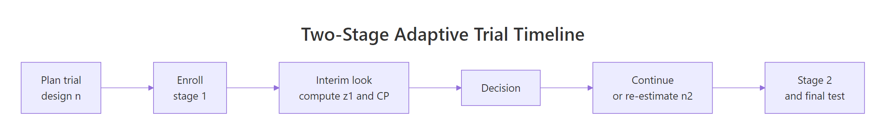
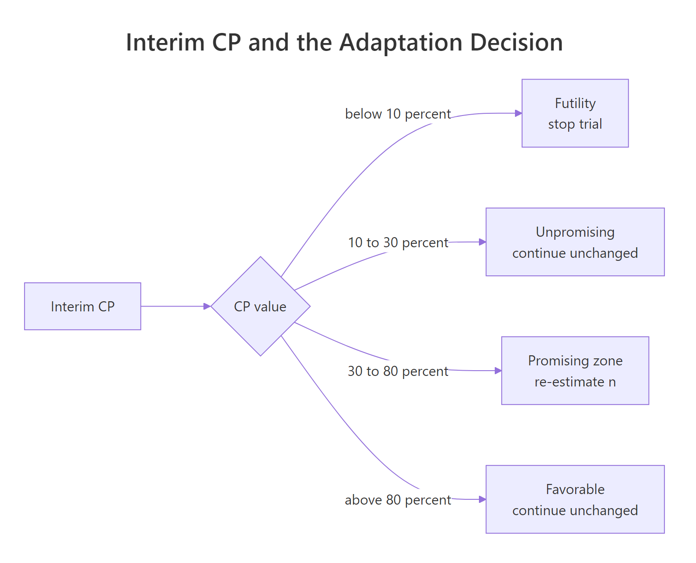
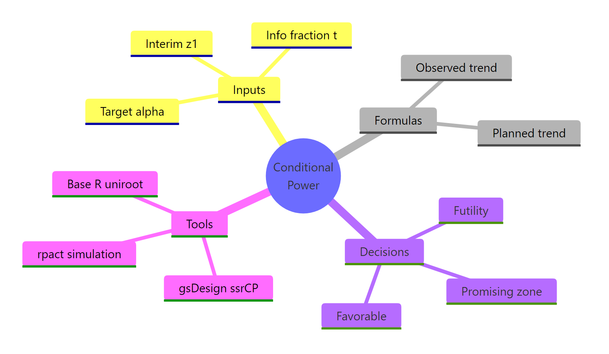

Conditional Power & Sample Size Re-Estimation in R
Conditional power is the probability your trial will reject the null hypothesis at the end, given what you have seen at an interim look. Sample size re-estimation uses conditional power to decide whether to boost the final sample size, so a promising trend can be carried to a confident conclusion without wasting patients on a hopeless one.
What is conditional power, and how do you compute it in R?
A trial enrolls half its planned patients and takes a peek at the data. Is the treatment effect on track? If the interim trend is weak, pouring in the remaining half is expensive; if it is strong, you are probably fine. Conditional power (CP) answers a sharper question: given this interim Z-statistic, what is the chance the final test will still reject the null? One line of base R gives you the number.
Under the observed interim trend, the closed form is a single pnorm() call:
$$CP_{\text{obs}}(z_1) = 1 - \Phi\!\left(\frac{z_\alpha - z_1/\sqrt{t}}{\sqrt{1-t}}\right)$$
where $z_1$ is the interim Z-statistic, $t = n_1/n$ is the information fraction, and $z_\alpha$ is the final one-sided critical value.
With an interim $z_1 = 1.4$, the trial has roughly a 48% chance of crossing the final efficacy boundary if the current trend continues. Not a disaster, not a win. That exact "somewhere in the middle" is where sample size re-estimation lives.
Try it: Compute conditional power at two contrasting interim looks: a weak one ($z_1 = 0.8$) and a strong one ($z_1 = 2.0$). Both at $t = 0.5$.
Click to reveal solution
Explanation: The observed-trend formula uses $z_1/\sqrt{t}$ as the implied drift. A small interim Z projects to a small final Z, so CP is low; a large interim Z projects a near-certain rejection.
How does conditional power change with the interim effect?
Plotting the whole CP curve is more useful than any single value. It shows at a glance how sensitive the end-of-trial forecast is to what happens at the interim.
Let us compute CP for a grid of interim Z-statistics, from clearly negative to clearly positive.
CP is essentially zero for negative interim trends, then rises steeply through the middle, then saturates near 1. That steep middle region is where one more unit of interim Z buys you a big jump in expected success. That is also the region where re-estimating sample size pays off.
The two reference lines mark the typical Mehta-Pocock "promising zone" boundaries: below 0.30 the trial is in trouble, above 0.80 it is almost certain to succeed, and between them is the zone where a sample size bump is worth considering.

Figure 1: A 2-stage adaptive trial: interim look computes conditional power and drives the adaptation decision.
cp_observed(1.4, t = 0.3) and cp_observed(1.4, t = 0.7) and notice how they differ.Try it: Plot the same CP curve at an earlier interim look, $t = 0.3$. Is the curve steeper or shallower than at $t = 0.5$?
Click to reveal solution
Explanation: At a smaller $t$ the interim contains less information, so the same $z_1$ maps to a less certain forecast. The curve is shallower through the middle and takes longer to saturate.
When should you re-estimate the sample size, and what is the "promising zone"?
Mehta and Pocock (2011) formalized a rule-based decision tied directly to conditional power. The idea: only adapt when it both helps and is defensible. That translates to four zones.

Figure 2: Interim CP ranges and the adaptation decision each one triggers.
The zone boundaries are conventions, not laws; trial teams set them in the protocol. A common default:
| Zone | CP range | Decision |
|---|---|---|
| Futility | < 0.10 | Stop for futility |
| Unpromising | 0.10 - 0.30 | Continue with planned n |
| Promising | 0.30 - 0.80 | Re-estimate n upward |
| Favorable | > 0.80 | Continue with planned n |
A tiny classifier captures the rule in R.
The four interim scenarios land cleanly in the four zones. Only the $z_1 = 1.4$ case triggers a sample size re-estimation decision.
Try it: Classify three additional interim Z-values: 0.5, 1.7, and 2.5. Predict the zone first, then check.
Click to reveal solution
Explanation: Because the CP curve is steep through the middle, small shifts in $z_1$ can move you across a zone boundary. That is why interim data management matters.
How do you compute the new sample size from conditional power in R?
In the promising zone, the question becomes: how much do I need to grow stage 2 so that conditional power reaches my target, say 0.90, under the observed trend?
The observed-trend CP formula above has one free variable, the new information fraction $t^\ast = n_1 / n^\ast$. Solve it for the target CP $\gamma$:
$$1 - \Phi\!\left(\frac{z_\alpha - z_1/\sqrt{t^\ast}}{\sqrt{1-t^\ast}}\right) = \gamma$$
There is no clean closed form, but uniroot() nails it in one line. Once you know $t^\ast$, the new total sample size is $n^\ast = n_1 / t^\ast$, so the inflation factor is $t / t^\ast$.
To bring conditional power up to 0.90 under the observed trend, the trial grows from 200 to about 374 per arm, an 87% increase. That is substantial. The max_factor = 3 guard keeps the decision from ballooning if the observed trend is weak.
Try it: Re-estimate the sample size for a weaker interim result, $z_1 = 1.1$, targeting a modest CP of 0.85. Use the same $n_{\text{planned}} = 200$.
Click to reveal solution
Explanation: At $z_1 = 1.1$ the observed trend is only mildly positive, so reaching CP 0.85 would need a very large trial. The max_factor = 3 cap kicks in, reporting the ceiling rather than a heroic sample size.
Why does naive re-estimation inflate Type I error?
Here is the catch that makes re-estimation subtle rather than obvious: if you just grow the trial and then run the usual test at the end, your Type I error rate is no longer $\alpha$. The decision to inflate $n$ is itself a function of the data, and ignoring it biases the final test.
A small simulation shows the inflation with a naive rule.
Under the null hypothesis the Type I error climbs from the targeted 0.025 to about 0.034, a roughly 35% relative inflation. A regulator would not accept that.
The fix is the inverse-normal combination test (Lehmacher and Wassmer, 1999). Fix the stage weights at the design stage, before any interim data is seen; then compute the final test as a weighted combination of the two stage Z-statistics. Because the weights are pre-specified and independent of interim data, $\alpha$ stays at 0.025 regardless of how you re-size stage 2.
Type I error is back at the nominal 0.025. The cost is statistical efficiency: the combination test weights are fixed, so an enlarged stage 2 does not receive its "fair" weight, and the design trades a bit of power for valid inference.
Try it: Rerun sim_combo() with promising-zone boundaries shifted to 0.20 and 0.90. Does the Type I error stay near 0.025?
Click to reveal solution
Explanation: The combination test does not care what rule you used to choose $n_2$; its weights are pre-fixed. That is precisely what gives it robust $\alpha$ control across reasonable adaptation rules.
What tools does R provide for sample size re-estimation?
Two production-grade R packages implement all of this, plus many refinements, with documented methods.
- gsDesign, Keaven Anderson's package. The
ssrCP()function adapts a 2-stage group-sequential design into a sample-size re-estimation design based on conditional power, with built-in inverse-normal combination weights and a range of CP-adjustment rules. - rpact, a confirmatory-trial package covering adaptive designs, group-sequential monitoring, and simulation.
getDesignInverseNormal()builds the base design andgetSimulationRates()orgetSimulationMeans()runs simulations with user-defined SSR rules.
Both packages require local installation, so the snippets below are illustrative only.
The scaffolding above is what practitioners reach for in real trials: both packages handle Type I error control, boundary construction, and reporting. Rolling your own is great for learning, but submit regulatory designs with a vetted package.
Try it: Describe in one sentence which of the two packages you would reach for first to simulate an SSR rule for a binary endpoint with a futility boundary.
Click to reveal solution
Either works, but rpact is the common first choice for simulation-heavy binary-endpoint designs with futility rules, because getSimulationRates() gives you a single call returning empirical power, expected sample size, and stopping probabilities. Use gsDesign when you want the algebraic design object and analytic conditional-power calculations exposed as first-class output.
Practice Exercises
Exercise 1: Compare observed-trend and planned-trend conditional power
Write a function cp_compare(z1, t, theta_drift) that returns both CP under the observed trend and CP under a user-supplied planned-drift $\theta$ (the expected final Z-statistic under $H_1$). Evaluate at $z_1 = 1.6$, $t = 0.5$, and a planned drift of $\theta = z_{0.025} + z_{0.10} = 3.24$. Save the result as my_compare.
Click to reveal solution
Explanation: Observed-trend CP tells you what happens if the current Z-value continues; planned-trend CP tells you what happens if the original design assumption holds. The two often differ sharply, which is exactly why the "assumed" versus "observed" CP debate matters.
Exercise 2: Simulate power of an SSR design versus a fixed design
For a true standardized effect of $\delta = 0.25$, compare the empirical power of (a) a fixed trial with $n = 200$ per arm and final Z-test at $\alpha = 0.025$, versus (b) a 2-stage SSR trial with $n_1 = 100$, planned $n_2 = 100$, promising-zone re-estimation boosting $n_2$ to 200, and an inverse-normal combination test. Save the two empirical rates in my_power_fixed and my_power_ssr.
Click to reveal solution
Explanation: The SSR design trades a tiny bit of combination-test efficiency for the option value of adapting when the interim looks promising. For a modestly sized true effect, that option value beats a rigid fixed design on empirical power, at the cost of variable sample size.
Exercise 3: Build a re-estimation table
Build a data frame my_grid with one row per combination of interim $z_1 \in \{0.8, 1.0, 1.2, 1.4, 1.6\}$ and target CP $\in \{0.80, 0.90\}$, giving the inflation factor (factor) from reestimate_n(). Cap at 3x and use $n_{\text{planned}} = 200$.
Click to reveal solution
Explanation: Rows with factor = 1.00 fall outside the promising zone, so no re-estimation. Rows hitting 3.00 are at the cap: the rule would have demanded an even larger trial. The grid is a practical design tool, scan it to pick the CP target that balances feasibility against efficiency.
Complete Example: end-to-end 2-stage SSR trial
Let us wire everything together into one function that simulates a full 2-stage adaptive trial with promising-zone SSR, and run it 3000 times under a true standardized effect of $\delta = 0.22$.
Under a true effect of $\delta = 0.22$, the adaptive design hits roughly 80% empirical power at an average total $n$ near 214 per arm, despite a planned total of 200. About 19% of simulated trials stop early for futility, saving patients in scenarios where the treatment does not work, and 29% land in the promising zone and trigger re-estimation. The other 52% run as originally designed. That is the SSR value proposition in one table.
Summary
The workflow reduces to four moves: compute CP at the interim, decide the zone, re-estimate $n$ inside the promising zone only, and always close with an inverse-normal combination test.

Figure 3: Core ideas of conditional power and sample size re-estimation.
| Concept | Formula or R expression | Purpose |
|---|---|---|
| Observed CP | 1 - pnorm((z_a - z1/sqrt(t)) / sqrt(1-t)) |
Predict end-of-trial success under current trend |
| Promising zone | CP in [0.30, 0.80] |
Where SSR is worth doing |
| Re-estimated $n$ | uniroot() solving CP = target |
New total sample size |
| Inverse-normal test | w1*z1 + w2*z2 with pre-fixed weights |
Preserves Type I error |
| Production tools | gsDesign::ssrCP(), rpact::getSimulationMeans() |
Vetted implementations |
References
- Jennison, C. and Turnbull, B. W. Group Sequential Methods with Applications to Clinical Trials. Chapman & Hall/CRC (2000). The textbook reference for the math behind interim analyses.
- Proschan, M. A. and Hunsberger, S. A. Designed extension of studies based on conditional power. Biometrics, 51(4): 1315-1324 (1995).
- Cui, L., Hung, H. M. J. and Wang, S. J. Modification of sample size in group sequential clinical trials. Biometrics, 55(3): 853-857 (1999).
- Mehta, C. R. and Pocock, S. J. Adaptive increase in sample size when interim results are promising: a practical guide with examples. Statistics in Medicine, 30(28): 3267-3284 (2011). The "promising zone" paper.
- Chen, Y. H. J., DeMets, D. L. and Lan, K. K. G. Increasing the sample size when the unblinded interim result is promising. Statistics in Medicine, 23(7): 1023-1038 (2004).
- Lehmacher, W. and Wassmer, G. Adaptive sample size calculations in group sequential trials. Biometrics, 55(4): 1286-1290 (1999).
- Posch, M., Bauer, P., Brannath, W. and Koenig, F. Conditional power and friends: the why and how of (un)planned, unblinded sample size recalculations in confirmatory trials. Statistics in Medicine (2022). PMC link
- gsDesign reference -
ssrCP()function. keaven.github.io/gsDesign - rpact vignette - sample size reassessment with binary endpoints. rpact.org
Continue Learning
- Statistical Power Analysis in R, the parent post covering power, effect size, and sample size planning for fixed designs.
- Hypothesis Testing in R, foundations of Type I / Type II errors and test statistics that underpin all adaptive methods.
- Sample Size Planning in R, starting point for any trial design, fixed or adaptive.